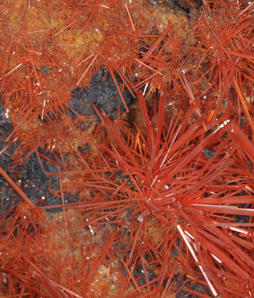

PbCrO4
Crocoite is an oxide mineral of lead and chromium (lead chromate) with composition PbCrO4. This sample is about 12x22 cm and is from Red Lead mine, Dundas, Tasmania, Australia. This sample is on display at the Smithsonian Museum of Natural History. From their description "Crocoite's color, always orange or reddish-orange, comes from chromium - a valuable metal first extracted from this rare mineral. The best crocoite in the world is found in Tasmania where it was once mined for lead." |
 |